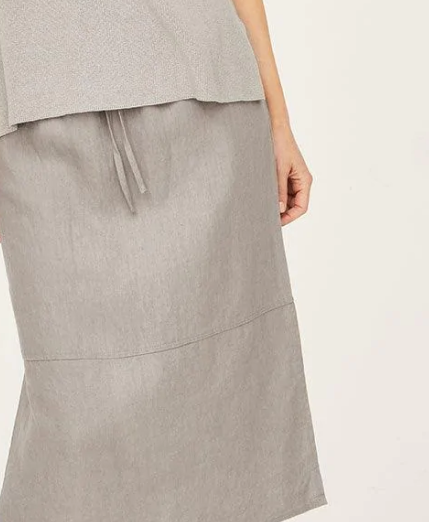
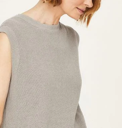
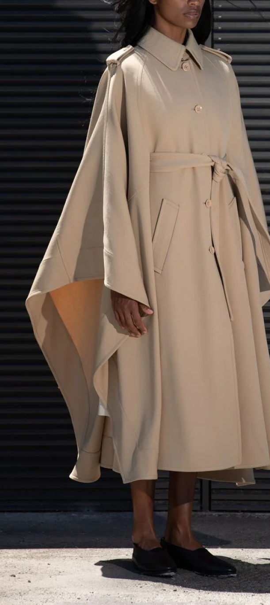
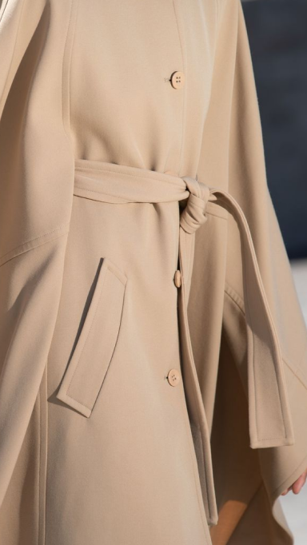
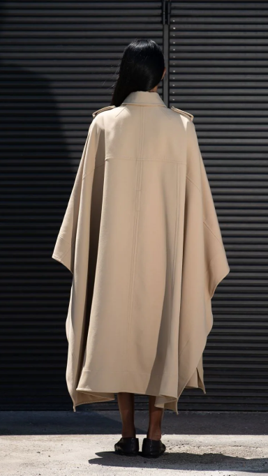
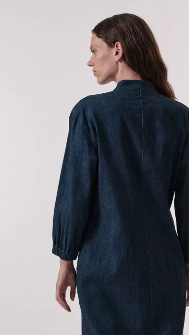
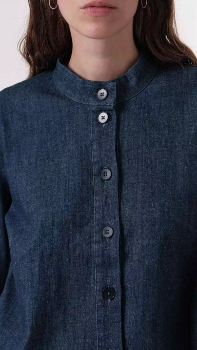

Organic Hemp
1.Thought

hadley hemp tie front midi skirt

2.Chloé


hadley hemp tie front midi skirt

3.Lanius
It all began in 1999 with an idea: to make fashion under fair conditions, to create beauty with a good feeling. LANIUS follows this vision until today and combines sustainable materials with sophisticated design. Collection after collection.
It all began in 1999 with an idea: to make fashion under fair conditions, to create beauty with a good feeling. LANIUS follows this vision until today and combines sustainable materials with sophisticated design. Collection after collection.


Denim Dress
made of organic cotton and hemp
Denim Dress
made of organic cotton and hemp